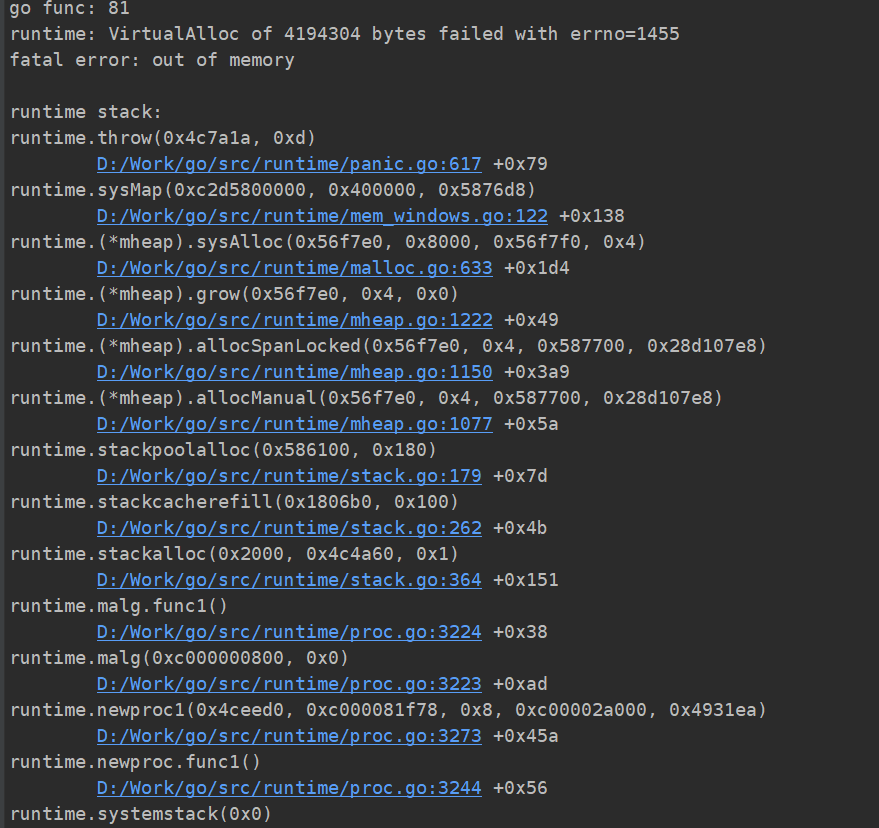

goroutine分析
Goroutine介绍
相比于其他语言，golang最为大家熟知的点是它强大的协程并发能力。以"轻量级"主打的协程，轻易就能达到十几万的并发数量。goroutine是Go中最基本的执行单元，每个go程序启动时，都会创建一个主goroutine。
协程被称为微线程或者用户态轻量级线程，协程调度不需要内核参与而是完全由用户态程序来决定，因此协程对于系统而言是无感知的。协程由用户态控制就不存在抢占式调度那样强制的CPU控制权切换到其他进线程，多个协程进行协作式调度，协程自己主动把控制权转让出去之后，其他协程才能被执行到，这样就避免了系统切换开销提高了CPU的使用效率
那在开发的过程中，是不是就可以不注意协程数量，随心所欲地起协程来处理逻辑呢？
为了分析这个问题，我们不妨来执行一段代码：
func main () {
number := math.MaxInt64
for i := 0; i < number; i++ {
go func(i int) {
// 做一些业务逻辑处理
fmt.Printf("go func: %d\n", i)
time.Sleep(time.Second)
}(i)
}
}
很快就出现了堆栈溢出的情况：

如果number是程序执行中起的goroutine数量，服务器资源会很快被耗尽，并导致程序最终被killed。
通过协程池解决goroutine数量问题
有过开发经验的小伙伴对于线程池一定不会陌生。线程池一般被用来解决频繁创建和销毁线程的场景中，为避免产生资源碎片，大家会使用线程池。对应的，协程也具有协程池。
对于开头的问题，很容易想到的解决方法就是通过协程池控制协程的数量。目前github上已经有成熟的开源项目ants实现了对大规模Goroutine的调度管理，复用。
不过也有人认为，goroutine作为轻量级的线程诞生的初衷就是为了解决线程高占用资源的问题，而通过创建goroutine池来解决问题，就显得本末倒置。
通过channel和sync方式解决goroutine数量问题
Go提供了一个很好的协程同步机制，channel。可以通过它发送或者接收值，值的类型可以在定义channel时指定。同时Go也提供了一个等待任务完成的阻塞器sync.WaitGroup。WaitGroup 对象内部有一个计数器，最初从0开始，它有三个方法：Add(), Done(), Wait() 用来控制计数器的数量。例如下面这段代码中，就利用了channel和sync的方式，控制goroutine并发数量。
package main
import (
"fmt"
"sync"
"time"
)
type Glimit struct {
n int
c chan struct{}
}
// initialization Glimit struct
func New(n int) *Glimit {
return &Glimit{
n: n,
c: make(chan struct{}, n),
}
}
// Run f in a new goroutine but with limit.
func (g *Glimit) Run(f func()) {
g.c <- struct{}{}
go func() {
f()
<-g.c
}()
}
var wg = sync.WaitGroup{}
func main() {
number := 10
g := New(2)
for i := 0; i < number; i++ {
wg.Add(1)
value :=i
goFunc := func() {
// 做一些业务逻辑处理
fmt.Printf("go func: %d\n", value)
time.Sleep(time.Second)
wg.Done()
}
g.Run(goFunc)
}
wg.Wait()
}
代码中对象g的channel缓存设置为2，当channel中有数据未被读取，且数据量等于2时，其余Run方法都将被阻塞在往g.c写数据，导致协程一直未被启用。而wg在这里的作用，就是利用wg.wait的能力，在所有协程未被执行完之前，主进程不会退出。否则，当主程序执行完成后，未执行的协程也会直接被终止。